India Financial Services Pulse — 11 September 2026
A focused view of price trends, valuations, market breadth and pullbacks across India's financial-services sector.
Contents
- Market at a Glance
- Nifty Financial Services
- Nifty Financial Services Ex-Bank
- Nifty MidSmall Financial Services
- Market Breadth by Index
- Sources
- Disclaimer
Market at a Glance
A compact comparison of indices.
- Free-float market cap: The value of shares available for public trading, measured in ₹ lakh crore. Each value includes its source date in the index section below.
- 3Y P/E position: Compares today's P/E with the index's own three-year history. A low percentile is near its three-year low; a high percentile is near its three-year high.
- Stocks up today: Shows market breadth—the percentage of stocks in the index that rose today.
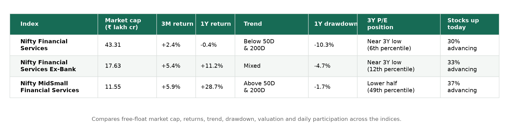
Nifty Financial Services
What it represents: Banks, insurers, housing-finance companies and other Indian financial-services businesses.
Close: 25,545.40 · Day change: +0.10% · 50D MA 26,317.83 (-2.94%) · 200D MA 26,553.70 (-3.80%) · Free-float market cap: ₹43.31 lakh crore (as of 11 September 2026)
Price
Price return shows how much the index rose or fell over each period. Current read — 3M: +2.4% · 1Y: -0.4% · 3Y: +28.0%.
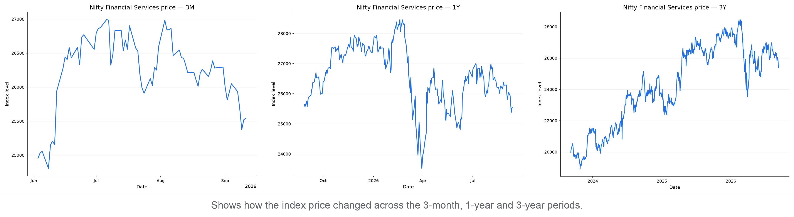
P/E
P/E compares index price with constituent earnings; the percentile shows where today's valuation sits within each period.
3M: 15.67 versus 16.32 median, 4th percentile (lower end)
1Y: 15.67 versus 17.15 median, 3rd percentile (lower end)
3Y: 15.67 versus 17.13 median, 6th percentile (lower end)
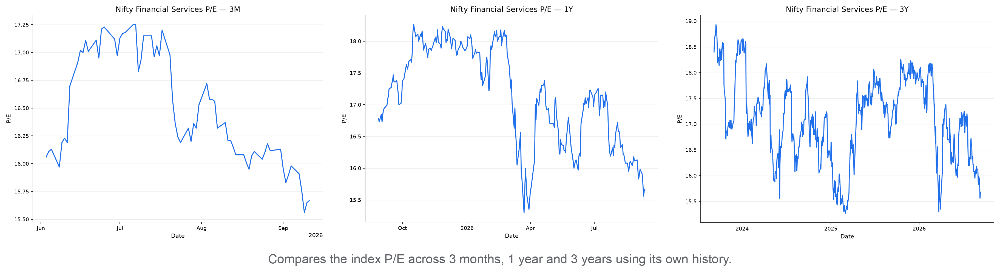
P/B
P/B compares index price with constituent book value; the percentile shows where today's P/B sits within each period.
3M: 2.36 versus 2.53 median, 4th percentile (lower end)
1Y: 2.36 versus 2.76 median, 1st percentile (lower end)
3Y: 2.36 versus 2.92 median, 1st percentile (lower end)
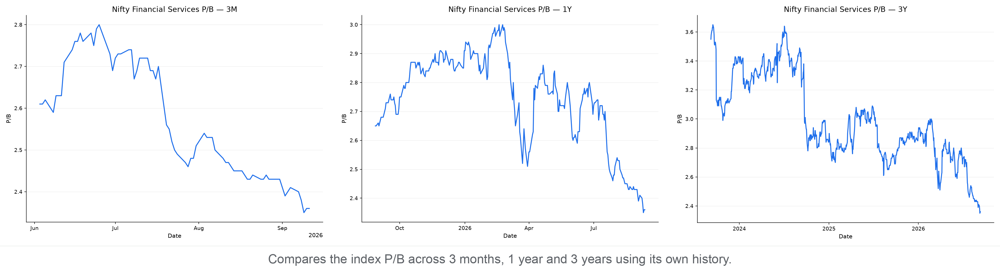
Moving Averages
The 50-day average shows the shorter trend and the 200-day average shows the longer trend. Current read — -2.9% versus the 50-day average; -3.8% versus the 200-day average; the 50-day is below the 200-day (bearish alignment).
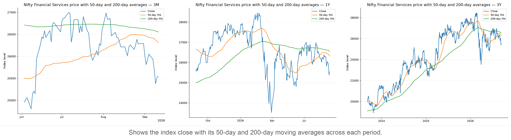
Support & Resistance
Zones use confirmed five-bar swing points clustered into 0.5% price bands; distances are measured from today's close.
3M: support 25,291–25,419 (0.5% below); resistance 25,607–25,737 (0.2% above)
1Y: support 25,150–25,277 (1.0% below); resistance 25,551–25,737 (0.0% above)
3Y: support 25,135–25,419 (0.5% below); resistance 25,607–25,854 (0.2% above)
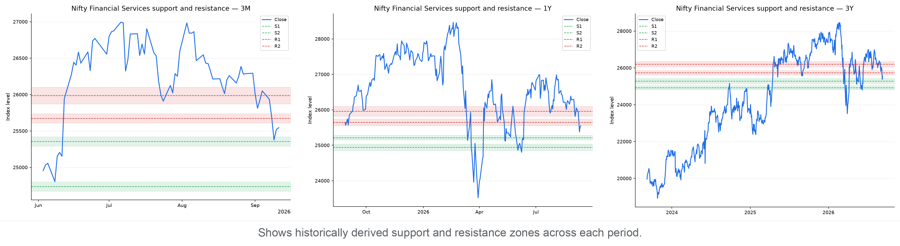
Drawdown
Drawdown is the percentage below the highest close reached within each chart's own period. Current pullback in context:
3M: Now 5.4% below peak · Worst 6.0% · At this level or lower on 4% of 72 trading days
1Y: Now 10.3% below peak · Worst 17.4% · At this level or lower on 14% of 259 trading days
3Y: Now 10.3% below peak · Worst 17.4% · At this level or lower on 5% of 747 trading days
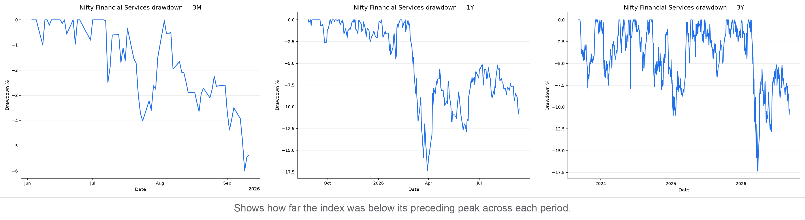
Nifty Financial Services Ex-Bank
What it represents: Indian financial-services companies excluding banks, such as insurers, NBFCs and housing finance.
Close: 31,646.50 · Day change: -0.11% · 50D MA 32,261.37 (-1.91%) · 200D MA 31,369.92 (+0.88%) · Free-float market cap: ₹17.63 lakh crore (as of 11 September 2026)
Price
Price return shows how much the index rose or fell over each period. Current read — 3M: +5.4% · 1Y: +11.2% · 3Y: +18.3%.
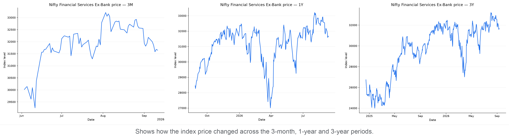
P/E
P/E compares index price with constituent earnings; the percentile shows where today's valuation sits within each period.
3M: 21.13 versus 22.52 median, 4th percentile (lower end)
1Y: 21.13 versus 22.99 median, 4th percentile (lower end)
3Y: 21.13 versus 22.93 median, 12th percentile (lower end)
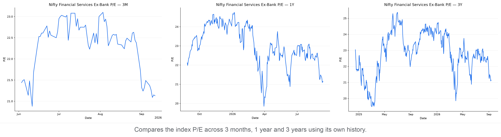
P/B
P/B compares index price with constituent book value; the percentile shows where today's P/B sits within each period.
3M: 3.86 versus 4.13 median, 3rd percentile (lower end)
1Y: 3.86 versus 4.29 median, 3rd percentile (lower end)
3Y: 3.86 versus 4.07 median, 36th percentile (below the middle)
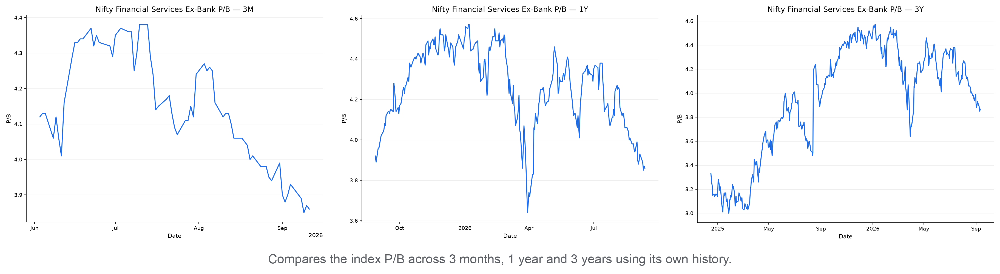
Moving Averages
The 50-day average shows the shorter trend and the 200-day average shows the longer trend. Current read — -1.9% versus the 50-day average; +0.9% versus the 200-day average; the 50-day is above the 200-day (bullish alignment).
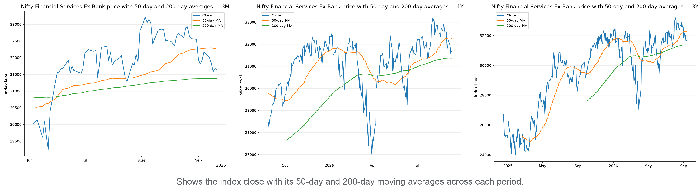
Support & Resistance
Zones use confirmed five-bar swing points clustered into 0.5% price bands; distances are measured from today's close.
3M: support 31,170–31,491 (0.5% below); resistance 31,934–32,382 (0.9% above)
1Y: support 31,038–31,495 (0.5% below); resistance 31,847–32,361 (0.6% above)
3Y: support 31,089–31,495 (0.5% below); resistance 31,847–32,361 (0.6% above)
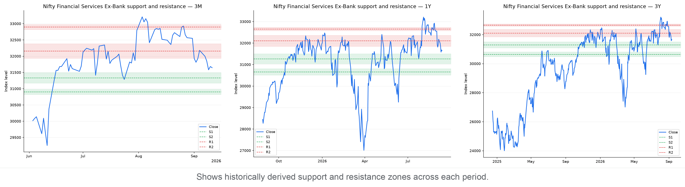
Drawdown
Drawdown is the percentage below the highest close reached within each chart's own period. Current pullback in context:
3M: Now 4.7% below peak · Worst 4.9% · At this level or lower on 3% of 72 trading days
1Y: Now 4.7% below peak · Worst 16.8% · At this level or lower on 19% of 259 trading days
3Y: Now 4.7% below peak · Worst 16.8% · At this level or lower on 30% of 433 trading days
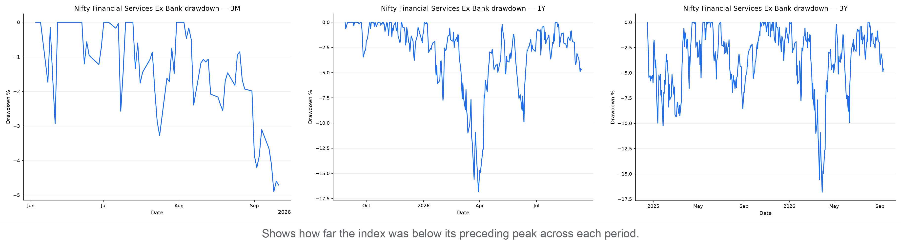
Nifty MidSmall Financial Services
What it represents: Mid- and small-cap Indian companies from the financial-services sector.
Close: 22,662.25 · Day change: +0.44% · 50D MA 22,523.53 (+0.62%) · 200D MA 21,277.60 (+6.51%) · Free-float market cap: ₹11.55 lakh crore (as of 11 September 2026)
Price
Price return shows how much the index rose or fell over each period. Current read — 3M: +5.9% · 1Y: +28.7% · 3Y: +35.6%.
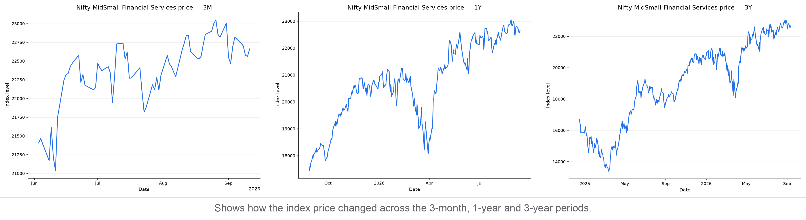
P/E
P/E compares index price with constituent earnings; the percentile shows where today's valuation sits within each period.
3M: 25.62 versus 27.66 median, 7th percentile (lower end)
1Y: 25.62 versus 28.61 median, 15th percentile (lower end)
3Y: 25.62 versus 25.76 median, 49th percentile (below the middle)
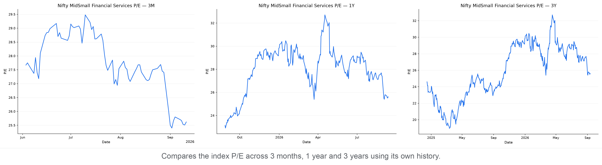
P/B
P/B compares index price with constituent book value; the percentile shows where today's P/B sits within each period.
3M: 3.21 versus 3.27 median, 36th percentile (below the middle)
1Y: 3.21 versus 2.99 median, 75th percentile (above the middle)
3Y: 3.21 versus 2.93 median, 84th percentile (upper end)
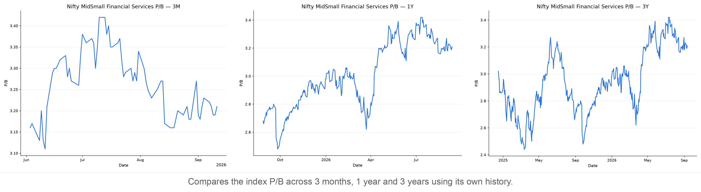
Moving Averages
The 50-day average shows the shorter trend and the 200-day average shows the longer trend. Current read — +0.6% versus the 50-day average; +6.5% versus the 200-day average; the 50-day is above the 200-day (bullish alignment).
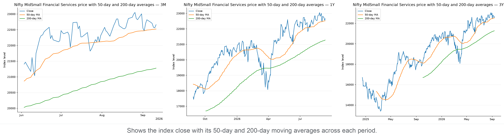
Support & Resistance
Zones use confirmed five-bar swing points clustered into 0.5% price bands; distances are measured from today's close.
3M: support 22,282–22,395 (1.2% below); resistance 22,716–22,912 (0.2% above)
1Y: support 22,282–22,401 (1.2% below); resistance 22,895–23,009 (1.0% above)
3Y: support 22,282–22,401 (1.2% below); resistance 22,895–23,009 (1.0% above)
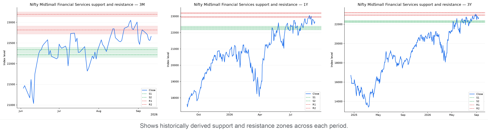
Drawdown
Drawdown is the percentage below the highest close reached within each chart's own period. Current pullback in context:
3M: Now 1.7% below peak · Worst 4.0% · At this level or lower on 32% of 72 trading days
1Y: Now 1.7% below peak · Worst 15.0% · At this level or lower on 41% of 259 trading days
3Y: Now 1.7% below peak · Worst 19.8% · At this level or lower on 63% of 433 trading days
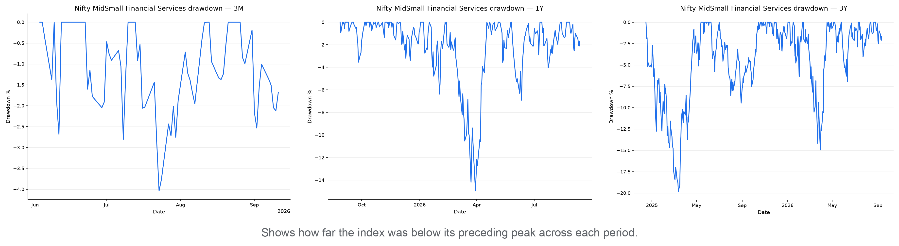
Market Breadth by Index
Market breadth counts how many constituents rose, fell, or were unchanged. It shows whether an index move has broad participation or is being driven by relatively few stocks; it is useful confirmation, not a prediction.
- Nifty Financial Services: 6 advanced, 13 declined, 1 unchanged — broadly negative (A/D ratio 0.46).
- Nifty Financial Services Ex-Bank: 10 advanced, 20 declined, 0 unchanged — broadly negative (A/D ratio 0.50).
- Nifty MidSmall Financial Services: 11 advanced, 19 declined, 0 unchanged — broadly negative (A/D ratio 0.58).
Breadth Snapshot
Green shows advancing constituents, red declining constituents, and grey unchanged constituents.
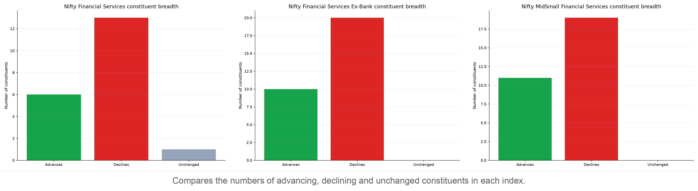
Sources
- Yahoo Finance
- Nifty Financial Services market data (NIFTY_FIN_SERVICE.NS): https://finance.yahoo.com/quote/NIFTY_FIN_SERVICE.NS
- NSE India
- Index price history: https://www.nseindia.com/api/historicalOR/indicesHistory
- Free-float market capitalization: https://www.nseindia.com/index-tracker/NIFTY%2050
- Index snapshot and market breadth: https://www.nseindia.com/api/allIndices
- Nifty Indices
- Historical P/E and P/B data: https://www.niftyindices.com/BackPage/getpepbHistoricaldataDBtoString